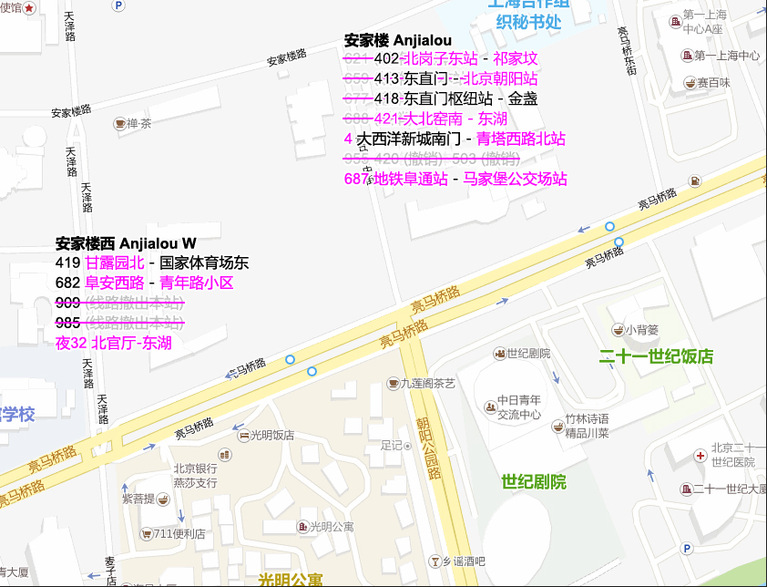

最近修订 2023 年 7 月 22 日
特别提示：由于北京市内公交线路调整频繁，故本乘车指南仅对本次会议有效。如果您多次参加 BJMUN 会议并选择乘坐公共交通前往会场，请务必在每次会前均查看本指南并知悉内容更新，以免带来不必要的麻烦。
如果您的出发地周边有以下公交线路连接，并且对出行时间不敏感（即您可以承受拥堵等因素对出行时间造成的影响），您可以选择乘坐公交车前往二十一世纪饭店会场和光明饭店客房，以免去您携带大量随身物品进出地铁站和接受地铁安检所带来的不便。距离二十一世纪饭店和光明饭店最近的公交车站是安家楼站和安家楼西站，两处站位共有 9 条公交线路经过（其中 1 条为夜班车线路）。
通往二十一世纪饭店会场和光明饭店客房的公交线路主要覆盖望京、酒仙桥、将台、新源里、甜水园地区。您可以使用“查找”功能搜寻下述公交线路是否有站点覆盖到您的出发地。点击线路的首末站可以展开或收起该公交线路途径站点的地图。
安家楼站和安家楼西站各有 1 处双向站位，分别位于亮马桥路口东西两侧：
国家体育场东→北辰东路→豹房→大屯南→炎黄艺术馆→安慧桥北→安慧桥东→
→惠新东桥南→对外经贸大学→中日医院→太阳宫桥→西坝河→静安庄东→三元桥南→
→燕莎桥东→安家楼西←枣营北站←枣营←朝阳公园西门←景园北站←甜水园街北口←
←甜水园北里←金台路口南←红庙路口北←英家坟←慈云寺←东八里庄←十里堡←
←青年路南口←甘露园←甘露园北
望京北路东口→广泽路→望京科技创业园→望京花园→宏昌路→望京街西口→
阜安西路→望京西园四区→大西洋新城南门→花家地北里西站→花家地北里→望京医院→
→丽都饭店→芳园里→肖君庙→五里沟→天泽路→安家楼西←枣营北站←
←枣营←朝阳公园西门←景园←甜水园街北口←甜水园北里←金台路口北←
←金台路口东←延静里←红领巾公园←八里庄南里←十里堡北里←青年路口西←青年路小区
祁家坟→潘道庙→北工大路西口→北京工业大学北站→平乐园→南磨房→劲松桥东→
→双井桥南→双井桥北→大北窑南→大北窑北→光华桥北→呼家楼北→白家庄→→亮马桥→燕莎桥南→燕莎桥东→安家楼←安家楼东←朝阳公园北门←
→农业展览馆
←东风北桥东←酒仙桥商场←四街坊←三街坊←电子城小区←驼房营←大陈各庄←
←东八间房←雍家村←北石家村←北岗子←北岗子东站

东直门→春秀路→塔园村→新源南路西口→新源南路→燕莎桥西→燕莎桥东→安家楼←
←安家楼东←朝阳公园北门←东风北桥东←酒仙桥商场←南十里居北站←南十里居←
←星火西路北站←北京朝阳站

东直门枢纽站→春秀路→塔园村→新源南路西口→燕莎桥西→燕莎桥东→安家楼←
←安家楼东←朝阳公园北门←东风北桥东←酒仙桥商场←酒仙桥中心小学←酒仙桥南←
←酒仙桥←将台路口北←陈各庄←王爷坟←大山子路口东←彩虹路←望京公园←草场地←
←南皋西站←南皋←黑桥←京旺家园一区←张万坟←张万坟东←金盏嘉园←金盏嘉园东←
（←蟹岛度假村东门）←小店路口←长店路口东←金盏卫生院←金盏

大北窑南→大北窑东→郎家园→八王坟北→景辉街东口→红庙路口北→金台路口南→
→甜水园北里→甜水园街北口→景园→朝阳公园西门→枣营→枣营北站→安家楼←
←朝阳公园北门←东风北桥东←酒仙桥商场←酒仙桥中心小学←酒仙桥←将台路口西←
←高家园←高家园社区←万红西街←地铁望京南站←望花路东里←地铁阜通站←
←望京西园四区←望京街西口←宏昌路←望京花园西区←利泽西街东口←东湖

青塔西路北站→岳各庄北路→岳各庄北桥北→梅市口路东口→梅市口路
→青塔西路→青塔西路北站（北行）→青塔蔚园→青塔桥北→北太平路口南→永定路口南→永定路口北→
→铁家坟南→铁家坟北→阜永路口南→定慧寺东→西钓鱼台→航天桥西→航天桥北→花园桥南→
→花园桥东→老虎庙→外文印刷厂→四道口东→二里沟西口→郝家湾→二里沟东口→三塔寺→
→车公庄东→平安医院→平安里路口东→厂桥路口东→北海北门→地安门东→→南锣鼓巷→
→宽街路口东→张自忠路→东四十条→东四十条桥西→东四十条桥东→工人体育场→三里屯→
→农业展览馆→亮马桥→燕莎桥南→燕莎桥东→安家楼←东风北桥东←酒仙桥商场←酒仙桥中心小学←
←酒仙桥←将台路口西←高家园←丽都饭店←望京医院←花家地北里←花家地北里西站←大西洋新城南门

请注意：本线快车不经过安家楼站，请务必注意，避免坐错车！
马家堡公交场站→角门北路东口→西马厂北口→西马厂→大李窑→大红门→
→大红门西里→南苑路果园→木樨园桥东→赵公口桥西→刘家窑桥西→刘家窑桥东→东铁营桥东→
→分钟寺桥西→十里河桥北→华威桥南→潘家园桥→劲松桥南→双井桥南→双井桥北→大北窑南→
→大北窑北→光华桥北→呼家楼北→白家庄→农业展览馆→燕莎桥南→燕莎桥东→安家楼←安家楼东←
←朝阳公园北门←东风北桥东←酒仙桥商场←酒仙桥←将台路口西←高家园←丽都饭店←望京医院←
←花家地北里←花家地北里西站←大西洋新城南门←地铁阜通站

您也可以选择乘坐地铁前往二十一世纪饭店会场和光明饭店客房。10 号线亮马桥站和 14 号线枣营站是距离二十一世纪饭店和光明饭店最近的地铁站，由北京地铁路网任何车站出发前往上述两站最多只需换乘两次，十分方便。本乘车指南提供由部分地区乘坐地铁至上述两站的最优乘车方案（考虑到参会人员可能携带大量个人物品，下述方案以最少换乘原则设计）。🔛=可同台换乘的车站。🚡=可通过直梯换乘的车站。
由以下车站出发时，请以 10 号线亮马桥站为下车站：
| 出发线路 | 出发车站 | 换乘站 2 | 换乘站 1 |
|---|---|---|---|
| 10 号线 | 全线各站 | 无需换乘 | |
| 13 号线 | 龙泽、回龙观、北苑 | 芍药居 | |
| 5 号线 | 惠新西街南口以北 | 惠新西街南口🚡 | |
| 8 号线 | 育知路—安德里北街 | 北土城🚡 | |
| 昌平线◆ | 全线各站 | 西土城🚡 | |
| 4 号线 | 中关村以北 | 海淀黄庄🚡 | |
| 16 号线 | 万泉河桥以北 | 西苑🚡 | 海淀黄庄🚡 |
| 16 号线◆ | 二里沟—红莲南路 | 二里沟🚡 | 双井🚡 |
| 16 号线 | 丰台站以远 | 丰台站🚡 | |
| 西郊线 | 全线各站 | 巴沟🚡 | |
| 6 号线 | 东大桥以西 | 呼家楼🚡 | |
| 8 号线 | 鼓楼大街—前门 | 南锣鼓巷🔛🚡 | 呼家楼🚡 |
| 11 号线 | 全线各站 | 金安桥🚡 | 呼家楼🚡 |
| S1 线 | 全线各站 | 金安桥🚡 | 呼家楼🚡 |
| 9 号线 | 全线各站 | 六里桥🚡 | |
| 房山线◆ | 全线各站 | 首经贸🚡 | |
| 燕房线◆ | 全线各站 | 阎村东🔛 | 首经贸🚡 |
| 房山线 · 9 号线直通新 | 全线各站 | 六里桥🚡 | |
| 燕房线（房-9 直通经由）新 | 全线各站 | 阎村东🔛 | 六里桥🚡 |
| 1 号线 | 永安里以西 | 国贸 | |
| 17 号线 | 全线各站 | 十里河🚡 | |
| 亦庄线 | 次渠南、亦庄火车站 | 次渠🚡 | 十里河🚡 |
| 亦庄线 | 肖村—经海路 | 宋家庄🚡 | |
| 亦庄 T1 线 | 全线各站 | 荣昌东街🚡 | 宋家庄🚡 |
| 19 号线 | 新发地 | 草桥🚡 | |
| 19 号线 | 北太平庄 | 牡丹园🚡 | |
由以下车站出发时，请以 14 号线枣营站为下车站：
| 出发线路 | 出发车站 | 换乘站 2 | 换乘站 1 |
|---|---|---|---|
| 14 号线 | 全线各站 | 无需换乘 | |
| 15 号线 | 全线各站 | 望京🚡 | |
| 6 号线 | 全线各站 | 金台路🚡 | |
| 1 号线 · 八通线 | 大望路以东 | 大望路 | |
| 7 号线 | 全线各站 | 九龙山🚡 | |
| 5 号线 | 天坛东门、刘家窑 | 蒲黄榆 | |
| 17 号线 | 全线各站 | 十里河🚡 | |
| 亦庄线 | 次渠南、亦庄火车站 | 次渠🚡 | 十里河🚡 |
| 8 号线 | 天桥以南 | 永定门外🚡 | |
| 4 号线 · 大兴线 | 陶然亭以南 | 北京南站🚡 | |
由蓝色线经过的车站出发时请以 10 号线亮马桥站为下车站。由粉色线经过的车站出发时请以 14 号线枣营站为下车站。粉色表示新修订的内容，红色表示暂不可用的内容。
标有箭头的换乘站表示您需要在此站换乘至箭头方向的线路。不要在标有黑色×符号的换乘站换乘。
关于换乘的详细信息请参考前述“参考乘车方案”一节相关记载。关于自下车站至二十一世纪饭店和光明饭店的步行路线请参见后述“亮马桥站步行方案”和“枣营站步行方案”两节相关记载。
展开 · 收起线路图2023 年 1 月 18 日（三）房山线・9 号线直通运行开始，房山线一部列车将以国家图书馆为终点站
乘坐房-9 直通列车请在六里桥站换乘 10 号线内环，或在七里庄站换乘 14 号线
乘坐房山线本线列车请在首经贸站换乘 10 号线外环
6 号线苹果园站、二里沟站、通运门站暂缓开通
8 号线大红门站暂缓开通
14 号线陶然桥站、高家园站暂缓开通
11 号线模式口站暂缓开通
16 号线苏州街站、二里沟站暂缓开通，木樨地站换乘 1 号线需二次入闸
1 号线、16 号线木樨地站站内换乘尚未开通，16 号线换乘 1 号线须从 F 口出站，步行越过永定河引水渠桥和三里河路，从 A1 口重新进站，1 号线换乘 16 号线沿相反路线进行站外换乘，持IC卡和各类乘车码可连续计费
昌平线朱房北站暂缓开通
1 号线苹果园站已于 2020 年 4 月 28 日关闭改造，预计 2023 年度末同福寿岭站一并开通
请从 C 口出站，掉头，至大马路右转，绕过燕莎中心后沿亮马桥路步行约 900 m，直行通过 3 个红绿灯路口，进入中日青年交流中心院内靠左通行，穿过停车场即到。
如需前往光明饭店客房，请不要越过第三个红绿灯路口，在第二个红绿灯后继续步行约 100 m 即到。
展开 · 收起地图
请从 A 口出站，沿朝阳公园路向北步行约 600 m，跨过亮马河后右转，沿亮马河左堤道路步行约 160 m，左转进入院内，经过二十一世纪大厦后下穿连廊即到。
如需前往光明饭店客房，在越过亮马河后不要右转，继续直行至红绿灯路口，向西越过马路并继续步行约 100 m 即到。
展开 · 收起地图
如需自首都机场乘坐机场巴士，请乘坐北京南站线或大兴国际机场专线（两场线）至亮马桥站。之后请通过天桥至马路对侧辅路的燕莎桥南公交车站，乘坐 402 路、4 路、687 路至安家楼站下车。
展开 · 收起地图
目前，北京市利用市内铁路资源开通了数条市郊铁路线路。另外，有一部分高速铁路在北京市内也具备快速进入城区的功能。这些列车适合来自远郊区县的代表使用，不过因为车次稀缺，市郊铁路和高速列车对代表报到的帮助有限。
北京市郊铁路网络目前有城市副中心线、怀柔-密云线、通密线、S2 线。全列车均按照北京地铁票制计费。
展开 · 收起线路图城市副中心线由良乡方向有 2 列车可以利用。请在北京西站下车，并在站内换乘地铁，按上节地铁乘车方案乘坐 7 号线—10 号线到达二十一世纪饭店会场。
| 列车 | 良乡发 | 北京西到 |
|---|---|---|
| S103 | 6:48 | 7:13 |
| S105 | 7:11 | 7:38 |
城市副中心线由通州（乔庄东）方向也有 2 列车可以利用。请在北京站下车，并出站换乘 2 号线至东直门站，进入东直门枢纽乘 418 路至安家楼站到达二十一世纪饭店会场。
| 列车 | 乔庄东发 | 通州发 | 北京东发 | 北京到 |
|---|---|---|---|---|
| S110 | 5:59 | 6:09 | 通过 | 6:30 |
| S102 | 7:07 | 7:18 | 7:32 | 7:43 |
怀柔-密云线由怀柔北方向有 3 列车可以利用。请在清河站下车，并在站内换乘地铁，按上节地铁乘车方案乘坐昌平线—10 号线到达二十一世纪饭店会场。
| 列车 | 怀柔北发 | 雁栖湖发 | 昌平北发 | 清河到 |
|---|---|---|---|---|
| S522 | 6:25 | 6:34 | 7:14 | 7:38 |
| S512 | 7:01 | 7:10 | 7:59 | 8:24 |
| S524 | 8:31 | 8:42 | 9:18 | 9:40 |
通密线由密云北方向有 1 列车可以利用。请在顺义站下车，步行至石门站乘坐 15 号线，按上节地铁乘车方案至望京站乘坐 14 号线到达二十一世纪饭店会场。
| 列车 | 密云北发 | 怀柔发 | 牛栏山发 | 顺义到 |
|---|---|---|---|---|
| S602 | 7:10 | 7:34 | 7:50 | 8:00 |
S2 线由延庆方向有 1 列车可以利用。请在黄土店站下车，通过连廊进入地铁霍营站，按上节地铁乘车方案乘坐 8 号线—10 号线到达二十一世纪饭店会场。
| 列车 | 延庆发 | 南口发 | 黄土店到 |
|---|---|---|---|
| S202 | 6:44 | 7:43 | 8:10 |
除 S2 线外的市郊铁路线路均实施实名制策略，需要办理实名制专用 IC 公交卡，普通 IC 公交卡无效，使用电子乘车码需通过人码合一验证，以上条件均不满足时须购买车票。
单程车票可以在不晚于列车发车前 30 分钟通过 12306 网站或 APP 预购。购买车票和凭车票乘车需要提供有效身份证件。
北京市郊铁路各线路采用铁路客运管理模式，列车发车前 5 分钟停止检票，进站前需要进行实名制检查和更严格的安检，因此请务必在停检前至少 5 分钟（现场购买车票则需在停检前至少 10 分钟）到达车站。
本章提供通过公路、铁路、民航等方式到达北京后自车站前往会场的交通路线。
进入地铁六里桥站，乘坐 10 号线内环至亮马桥站。
该方案涉及路面交通，请注意所要时间！
请步行至西大望路光辉桥南公交站，乘坐 31 路或 985 路至金台路口北，下车后同站换乘 682 路至安家楼西站。
该方案涉及路面交通，请注意所要时间！
请从北门出客运站，向西步行至赵公口桥西公交站，乘坐 687 路至至安家楼站。
请通过天桥至京开高速东侧，向南步行至新发地站 A 口，乘坐 19 号线—10 号线外环至亮马桥站。
请通过交通枢纽天桥前往四惠地铁站，乘坐 1 号线—14 号线至枣营站。
进入地铁天通苑北站，乘坐 5 号线—10 号线内环至亮马桥站。
该方案涉及路面交通，请注意所要时间！
出站后横穿广场至地铁北京站，乘坐 2 号线至东直门，出 F 口进入东直门枢纽，乘坐 418 路至安家楼站。
通过北 2·南 2 出站口进入地下二层地铁站，乘坐 7 号线—10 号线外环至亮马桥站。
在地下出站层进入地铁站，乘坐 14 号线至枣营站。
在地下出站层进入地铁站，乘坐 10 号线内环至亮马桥站。
该方案涉及路面交通，请注意所要时间！
出站后前往东广场公交枢纽，乘坐 413 路至安家楼站。
在地下出站层进入地铁站，乘坐昌平线—10 号线内环至亮马桥站。请不要乘车至北京北站。
所有修订均以粉色字体显示。
| 日期 | 版本 | 修订内容 | 批准人 |
|---|---|---|---|
| 2015 年 2 月 8 日 | 1.0 | 第一次发布 | Madoka |
| 2023 年 7 月 22 日 | 2.0 | 第二次发布 | Madoka |
| 日期 | 版本 | 修订内容 | 批准人 |
|---|---|---|---|
| 2022 年 7 月 19 日 | 1.0 | 第一次发布 | RiceShower |
| 2022 年 9 月 30 日 | 1.1 | 更新 19 号线车站开通状态 | RiceShower |
| 2023 年 1 月 17 日 | 1.2 | 添加 2022 年度新线，并标示昌平线南延段不可用状态； 根据线路更新迭代路网换乘方案； 添加三元桥站暂停使用与换乘信息； 添加 402 线 51 号站和 52 号站预计开通时期。 | RiceShower |
| 2023 年 7 月 22 日 | 1.3 | 移除昌平线南延段不可用状态； 根据线路更新迭代路网换乘方案； 移除三元桥站暂停使用与换乘信息。 | RiceShower |
| 日期 | 版本 | 修订内容 | 批准人 |
|---|---|---|---|
| 2023 年 1 月 17 日 | 1.0 | 第一次发布 | RiceShower |
| 2023 年 7 月 22 日 | 1.1 | 移除昌平线南延段不可用状态并更新地铁接驳； 更新市郊铁路时刻信息。 | RiceShower |